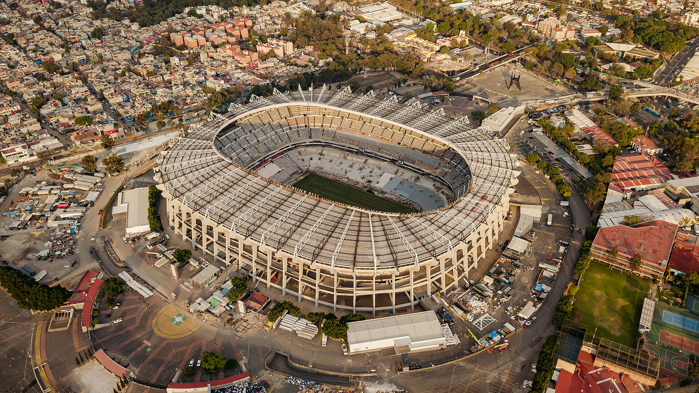
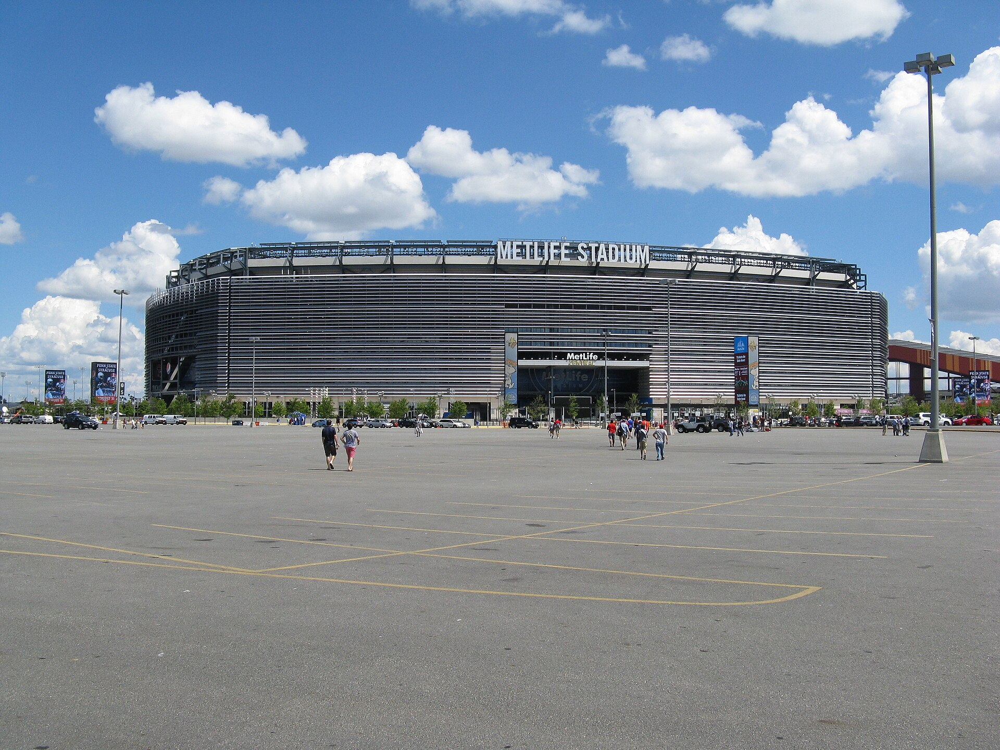
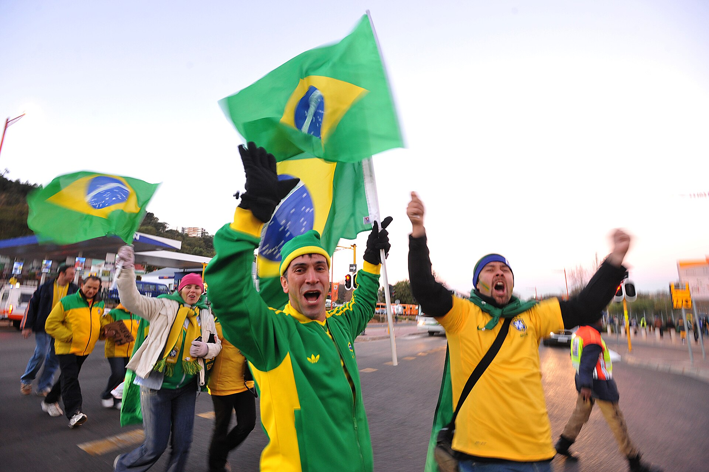
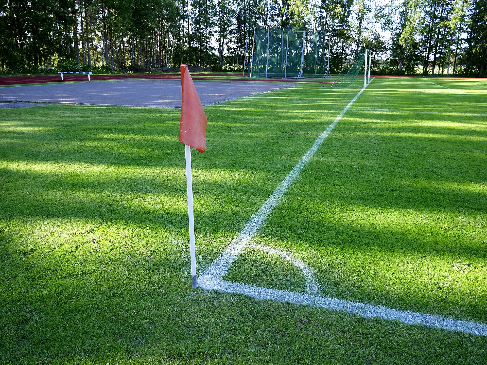
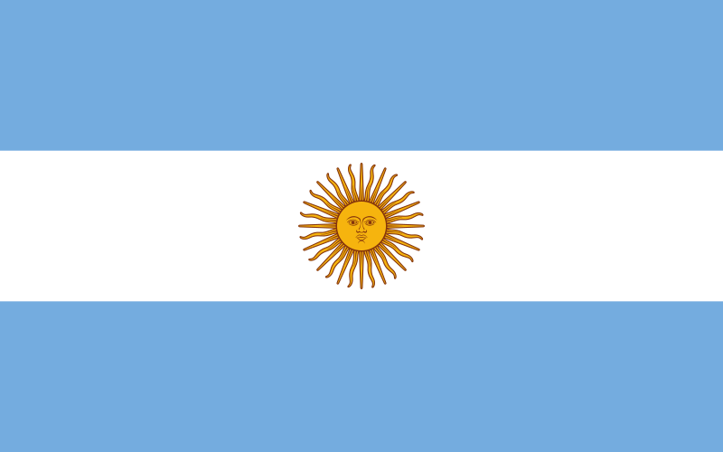

Canadá, México e Estados Unidos
Copa do Mundo 2026
Uma página especial para celebrar a maior festa do futebol mundial, com seleções, histórias, craques, jogos fictícios e efeitos visuais para uma experiência vibrante.

Fotos reais
Cenários de verdade para entrar no clima
Imagens reais de estádio, torcida e campo para aproximar o site da atmosfera de uma Copa do Mundo.



Seleções participantes
Camisas que fazem a Copa pulsar
Uma galeria de seleções em destaque, com cards que acompanham o ritmo das arquibancadas.

Brasil
Tradição, drible e busca por mais uma estrela.

Argentina
Intensidade, camisa pesada e toque sul-americano.

França
Velocidade, técnica e uma geração competitiva.

Portugal
Talento criativo e força no ataque.

Japão
Organização, ritmo alto e futebol coletivo.

Marrocos
Defesa firme, contra-ataque e muita identidade.

México
Casa cheia, energia nas arquibancadas e paixão.

Canadá
Velocidade pelos lados e espírito de anfitrião.
Destaques de jogadores
Personagens de uma Copa inesquecível
Maestro do meio
Controla o ritmo, acha passes curtos e longos, e muda o jogo com uma bola enfiada.
Artilheiro veloz
Ataca o espaço, finaliza de primeira e transforma cruzamentos em gritos da torcida.
Goleiro muralha
Defende pênaltis, comanda a área e segura o resultado nos minutos finais.
Histórico das Copas
Momentos que viraram memória
Primeira edição
O torneio nasceu no Uruguai e abriu caminho para a competição mais famosa do futebol.
Brasil campeão
A seleção brasileira conquistou sua primeira taça e encantou o mundo.
Tricampeonato
Uma equipe histórica marcou época com futebol ofensivo e jogadas inesquecíveis.
Penta brasileiro
O Brasil voltou ao topo em uma Copa disputada na Coreia do Sul e no Japão.
Nova era
A Copa cresce para 48 seleções e será sediada por três países da América do Norte.
Tabela fictícia
Rodada especial da fase de grupos
Jogos criados para a atividade, com visual inspirado em tabelas esportivas e placares de transmissão.
Brasil
20:00
México
Estádio Azteca - Grupo A
Argentina
18:00
Japão
Seattle Arena - Grupo B
França
21:00
Marrocos
New York New Jersey - Grupo C
Portugal
19:30
Canadá
Toronto Stadium - Grupo D
Experiência da torcida
A Copa também acontece fora do gramado
Bandeiras, cantos, telões, encontros com amigos e aquela ansiedade antes do apito inicial transformam cada jogo em evento.
Voltar ao inícioBandeiras em movimento
Faixas coloridas dão ritmo ao visual e reforçam o clima internacional.
Campo tático
Linhas e marcações lembram a organização dos jogos em uma transmissão.
Troféu dourado
Brilho, vitória e celebração aparecem como fechamento da página.